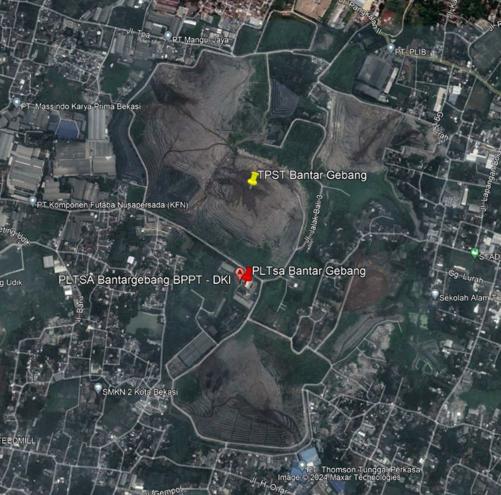
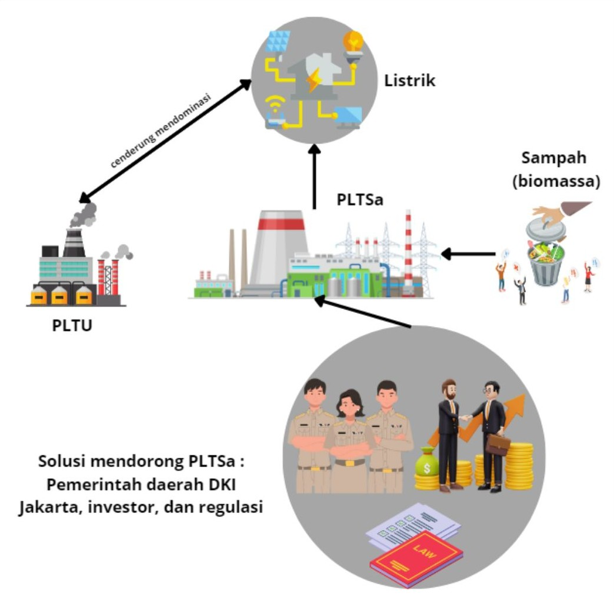

Peran Regulasi dalam Memanfaatkan Permasalahan Sampah di DKI Jakarta
Latar belakang
Perubahan iklim berdampak signifikan pada sektor pertanian, perikanan, kesehatan, dan ekonomi. Salah satu pendorongnya adalah pembakaran batu bara untuk pembangkit listrik. Indonesia saat ini masih mengoperasikan sekitar 130 PLTU, termasuk 16 PLTU di sekitar Jakarta, sehingga kebutuhan listrik kota ini masih bergantung pada sumber energi yang ikut memperburuk perubahan iklim. Karena itu, Jakarta membutuhkan sumber energi alternatif yang lebih bersih.
Salah satu kandidatnya justru berasal dari masalah lain yang dihadapi Jakarta, yaitu sampah. Sebagai kota berpenduduk padat, Jakarta menghadapi penumpukan sampah di TPA, terutama sampah organik yang menghasilkan gas rumah kaca saat terfermentasi tanpa oksigen. Jika diolah menjadi biomassa, sampah ini dapat menjawab dua masalah sekaligus, yaitu kebutuhan listrik dan penumpukan sampah. Namun, PLTSa Bantar Gebang yang diresmikan pada 2019 dinilai belum optimal, dan peran pemerintah sebagai regulator masih belum jelas. Esai ini menelaah bagaimana regulasi dapat mendorong pemanfaatan sampah sebagai sumber energi di Jakarta.
Data yang digunakan
| Data | Format Data | Jenis Data | Sumber |
|---|---|---|---|
| Konsumsi dan tarif listrik DKI Jakarta | Tabular | Sekunder | BPS Jakarta, Kompas, KESDM |
| Biaya modal pembangkit biomassa dan batu bara | Tabular | Sekunder | IEA ETE, USAID |
| Komposisi sampah TPST Bantar Gebang | Tabular | Sekunder | UPST DLH DKI Jakarta |
| Lokasi PLTSa dan TPST Bantar Gebang | Citra | Sekunder | Google Earth |
| Regulasi dan kebijakan (Perpres 25/2018, RTRW, RPS, FIT) | Dokumen | Sekunder | Pemerintah, Green City Times |
Metode
Kajian dilakukan dengan studi literatur dan analisis data sekunder. Pertama, biaya modal pembangkit biomassa dan batu bara dibandingkan, lalu diasumsikan untuk kapasitas listrik Jakarta sebesar 11.353 MW. Kedua, ketersediaan bahan baku dan jarak antara TPST dan PLTSa Bantar Gebang ditinjau melalui data komposisi sampah dan citra lokasi. Ketiga, kebijakan insentif energi terbarukan di negara lain, seperti Renewable Portfolio Standards (RPS) dan Feed-in Tariffs (FIT), dipelajari untuk dirumuskan sebagai bahan adaptasi bagi Indonesia.
Hasil
Hambatan terbesar PLTSa bukan pada ketersediaan sampah, melainkan pada biaya. Dengan kapasitas listrik Jakarta sebesar 11.353 MW, kebutuhan modal pembangkit biomassa diperkirakan Rp340–568 triliun, sedangkan pembangkit batu bara hanya Rp9–45 triliun. Bahkan jika biomassa memakai batas bawah dan batu bara memakai batas atas, biaya biomassa masih sekitar tujuh kali lipat. Selisih sebesar ini membuat investor cenderung memilih batu bara, dan itu menjelaskan mengapa PLTU masih mendominasi.
| Jenis Pembangkit | Biaya per kW | Asumsi Biaya (11.353.000 kW) |
|---|---|---|
| Biomassa | Rp30–50 juta | Rp340–568 triliun |
| Batu bara | Rp789 ribu–4 juta | Rp9–45 triliun |
Meski begitu, Jakarta punya dua keunggulan yang tidak dimiliki banyak daerah lain. Pertama, bahan bakunya melimpah dan sudah terkumpul di satu tempat, yaitu TPST Bantar Gebang. Kedua, PLTSa berada di lokasi yang sama dengan TPST, sehingga biaya mengangkut sampah ke pembangkit dapat ditekan. Artinya, kendala yang tersisa bukan teknis, melainkan bagaimana membuat proyek ini layak secara finansial.

Di titik inilah regulasi berperan. APBD Jakarta tidak akan mampu menutup biaya sebesar itu, sehingga proyek membutuhkan investor pihak ketiga, dan investor hanya akan masuk jika aturannya menjanjikan keuntungan yang pasti. Negara lain sudah menyiapkan instrumennya, dan instrumen berikut dapat diadaptasi untuk Indonesia:
| Instrumen | Cara kerja | Manfaat bagi PLTSa |
|---|---|---|
| Feed-in Tariff (FIT) | Harga listrik tetap yang dibayarkan kepada produsen energi terbarukan. | Memberi kepastian pendapatan, sehingga investor lebih berani menanggung biaya modal yang tinggi. |
| Renewable Portfolio Standards (RPS) | Kewajiban memenuhi porsi tertentu listrik dari sumber terbarukan. | Menjamin adanya permintaan terhadap listrik dari PLTSa. |
| Kredit pajak dan kemitraan publik-swasta | Keringanan pajak dan pembagian peran serta risiko antara pemerintah dan swasta. | Menurunkan beban biaya dan risiko investasi. |
Regulasi saja belum cukup. Pemerintah juga perlu memastikan listrik yang dihasilkan PLTSa benar-benar terserap, misalnya dengan mendorong penggunaan listrik di sektor transportasi. Jika syarat-syarat ini terpenuhi, PLTSa tidak hanya mengurangi tumpukan sampah di Bantar Gebang, tetapi juga mendukung SDGs tentang energi bersih dan terjangkau serta pekerjaan layak dan pertumbuhan ekonomi. Pengembangan PLTSa juga menggerakkan ekonomi sirkular dan ekonomi hijau, karena sampah yang tadinya tak bernilai berubah menjadi sumber energi sekaligus membuka lapangan kerja.

Kesimpulan
Biomassa dari sampah berpotensi menjawab masalah sampah dan kebutuhan listrik sekaligus, tetapi biayanya tinggi dan kinerja PLTSa Bantar Gebang masih perlu ditingkatkan. Karena itu, peran regulasi menjadi kunci: pemerintah perlu menetapkan prioritas energi terbarukan, merancang insentif seperti feed-in tariff dan RPS untuk menarik investor, serta menggandeng sektor swasta dan masyarakat. Dengan sinergi tersebut, pemanfaatan sampah dapat menekan emisi, menciptakan lapangan kerja, dan memperbaiki kualitas lingkungan Jakarta.
← View other projects